01
“梦想启航”庆祝中华人民共和国成立76周年暨迎新生文艺晚会话剧展演
“梦想启航”迎新生晚会于东校区田径场举办，献礼建国76周年。由艺术团承办，话剧队出演，原创话剧红色主题节目《农民院士》，万名新生师生到场观演，展现校园美育风采，迎接新生逐梦启航。
查看新闻报道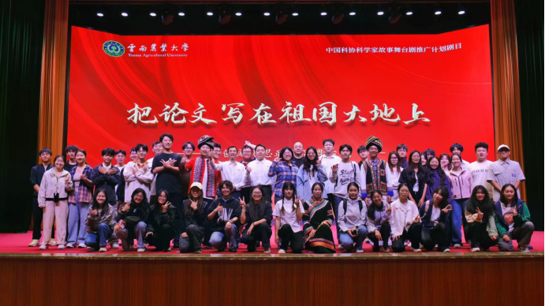
01 / 社团简介
高水平艺术团话剧队是在校团委领导下，由热爱戏剧表演的在校学生组成的文艺团体。队伍以话剧艺术为载体，立足校园，演绎百态故事，传递青年思想。自成立以来，队员们怀揣对话剧的热忱，深耕舞台创作与剧目排演。从经典剧目改编到原创现实题材作品，我们持续打磨台词、肢体表演、舞台调度，积极参与校内晚会、展演活动；多次代表学校参加“读懂中国”等国家级，省级戏剧赛事，斩获多项荣誉。队内形成“老带新”传承模式，日常开展台词训练、情景演绎、剧本研读、舞台实操等常态化训练。我们不仅专注舞台呈现，更鼓励大家表达自我、理解角色、感悟生活。无论有无表演基础，只要热爱戏剧、向往舞台，话剧队都欢迎每一位愿意奔赴舞台的伙伴，一起用台词诉说情感，用表演点亮舞台。
02 / 精彩瞬间
每一次登台，都是戏剧与热爱交汇的瞬间。
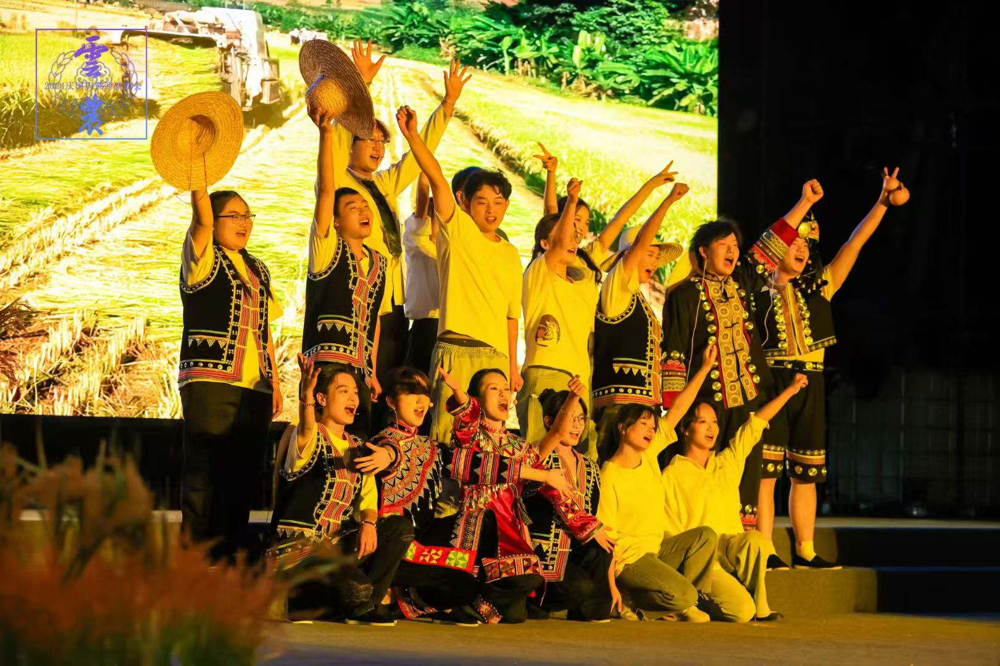
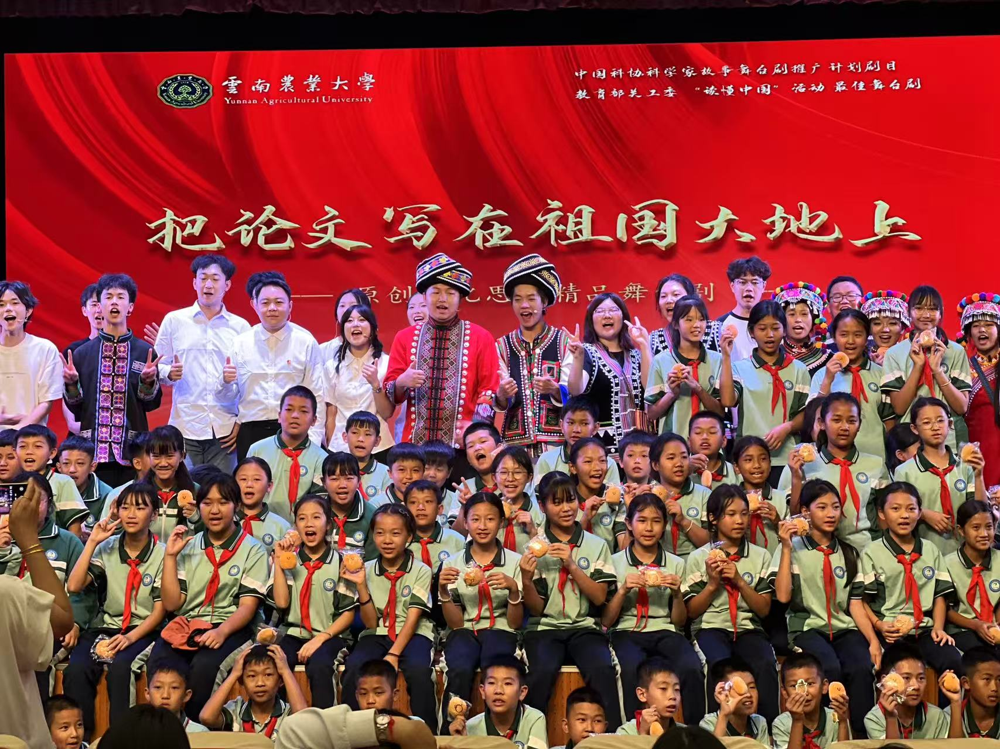
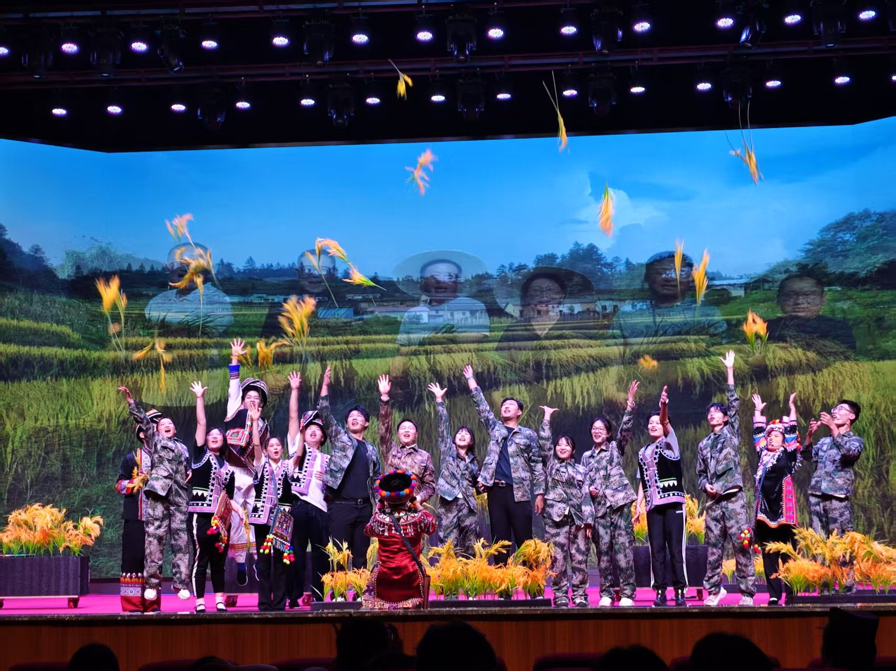
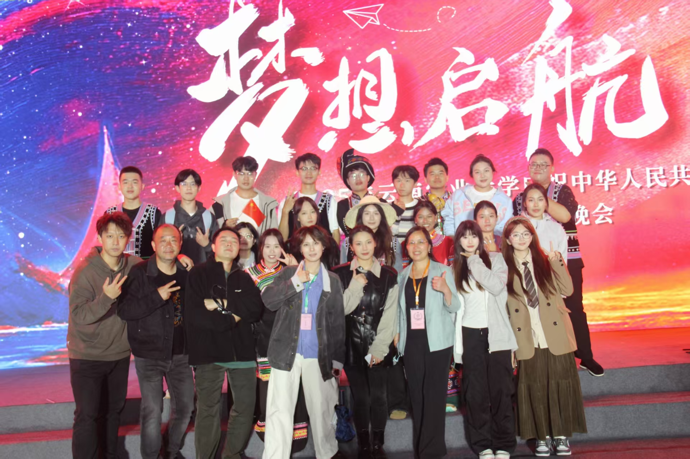
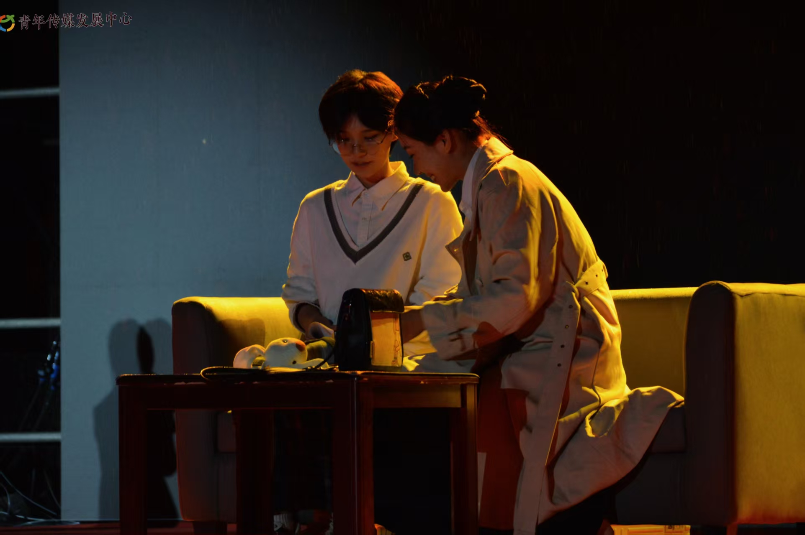
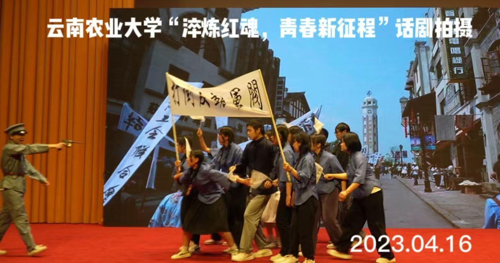
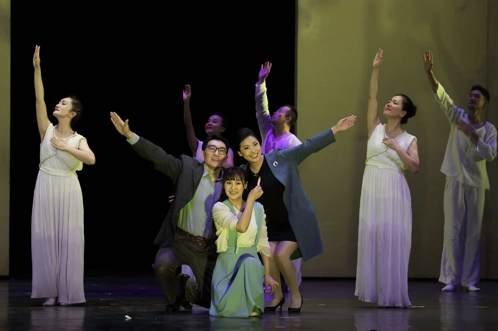
03 / 精彩活动
日常排练与舞台实践并存，用表演讲述云农故事。
01
“梦想启航”迎新生晚会于东校区田径场举办，献礼建国76周年。由艺术团承办，话剧队出演，原创话剧红色主题节目《农民院士》，万名新生师生到场观演，展现校园美育风采，迎接新生逐梦启航。
查看新闻报道02
在学校举办“庆祝中华人民共和国成立76周年”系列主题活动之际，由学校师生自编、自导、自演的思政舞台剧《把论文写在祖国大地上》在校友会堂精彩上演，为团省委、省青少年科技中心、昆明市教体局，五华区、盘龙区、西山区教体局领导及辖区中小学师生代表带来了一场朴实而又生动的演绎。
查看新闻报道03
舞台剧《农民院士》由校艺术团话剧队与理学院联合演绎。剧目立足乡土大地，讲述扎根基层的奋斗故事，演员们以真挚表演诠释坚守与奉献，在舞台之上展现平凡人铸就的不凡力量。
查看新闻报道
04
为深入学习宣传时代楷模精神，探索推进大中小学思想政治教育一体化建设，提升校园文化品牌影响力，4月28日，云南农业大学原创舞台剧《把论文写在祖国大地上》演职团队赴孟连县开展公益巡演活动。
查看新闻报道05
音乐舞台剧《是妈妈是女儿》由校大学生艺术团声乐队与话剧队联合演绎。节目以细腻的表演勾勒母女之间真挚动人的情感，在舞台上诉说亲情羁绊，温柔戳中人心，唤起大家对于母亲的思念。
查看新闻报道04 / 荣誉墙
每一次登台出征，都是热爱与坚持结出的果实。
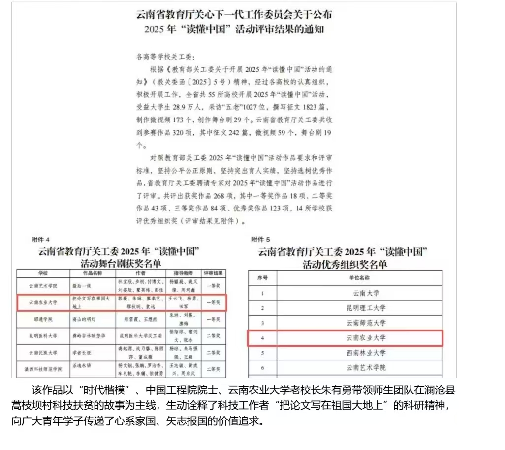
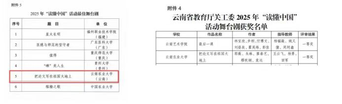
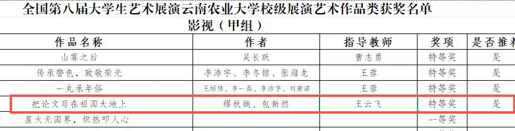